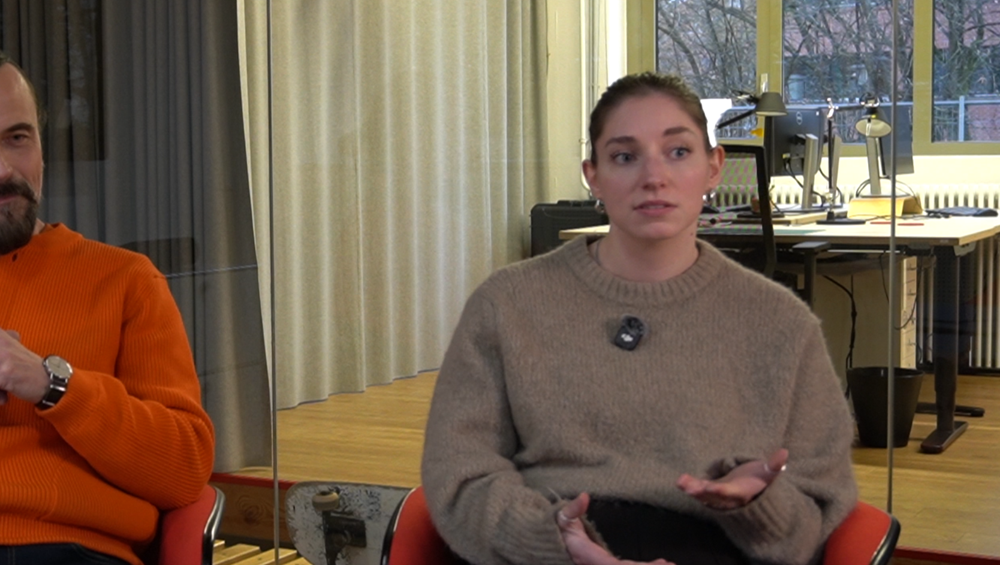

V
Ich glaube das erste Mal, dass ich aktiv damit konfrontiert wurde war so in der Schule, weil das dann plötzlich so einen großen Hype hatte, dass alle Leute ihre Seminar Facharbeit mit KI geschrieben haben. Ich nicht. Und dann halt jetzt im Studium wurds halt auch verwendet. Vor allem als ich mich beworben habe, war es eine recht große Sache. Weil man uns zum Beispiel davon abgeraten hat mit Pixelart oder so etwas zu bewerben, weil sowas recht schnell mit einer KI generiert werden kann. Und halt jetzt so in meinen letzten Semestern war es halt immer eine Sache mit "Ja, das könnte halt KI auch machen, Mach was anderes." Aber auch so fürs Programmieren und so was. Alles wurde uns in die Hand gehangen oder recht viele haben es dann verwendet, um mal ihren eigenen Code zu machen. Ich selber verwende KI dahingehend als zum Beispiel Hilfsmittel um Code zu schreiben. Also ich lass KI nicht einen kompletten Code schreiben, aber wenn ich mal nicht weiter weiß, dann frage ich mal nach, ob KI eine gute Idee hat. Aber hauptsächlich schreibe ich es dann doch selber. So Konfrontation damit dann als Hilfsmittel.
Klaus Neuburg
Aufgefallen? Na ja, also so richtig professionell sozusagen damit befasst habe ich mich, glaube ich, so um 2018, in eher so einen theoretischen Bereich. Das war also noch vor der großen Chat GPT Welle, wo das irgendwie immer mehr Thema wurde. Auch eher im Hochschulbereich. Und ungefähr 2019/2020 habe ich dann mit einem Kollegen ein Paper dazu auch geschrieben. Dann musste ich mich ein bisschen mehr damit befassen. Aber genau das war eher im theoretischen Bereich.
B12
Fiona Gebhardt:Es ist Früh aufgefallen. Ich habe hier 2022 meine Bachelorarbeit gemacht. Im Thema Metaverse, völlig veraltetes Thema gibt es gar nicht mehr. Ist völlig irrelevant. Aber da ist uns KI auf jeden Fall schon aufgefallen. Natürlich sowieso auch schon vorher, aber dort ist sie reell ins Bild gekommen.

2023 haben wir mich dann in
Gänze Vollzeit dafür eingesetzt. Jetzt langsam ein
bisschen mehr Teilzeit; wieder Vollzeit dafür eingesetzt, dass ich eben bei uns
KI entwickeln kann.
Albert Radl
KI ist mir nicht wirklich aufgefallen, sondern ist so an mich herangetragen worden. Ursprünglich auch so vor vielleicht zehn Jahren ungefähr, als ich das noch in einer anderen Ecke verortet hatte, als ich gedacht habe. Da geht es um Textgenerierung und ich habe für mich in dem Fall sehr naiv noch geglaubt: Bis das Bilder Filme generieren, betrifft; Das erlebe ich in meinem Berufsleben nicht mehr. Fünf Jahre später war es soweit und inzwischen ist es krass was mit der AI generiert werden kann.
Fabio Kolligs
KI ist mir ungefähr so 2022 aufgefallen. Das war am Anfang von meinem Studium. Da ist ChatGPT glaube ich relativ frisch rausgekommen und ein paar von meinen Kommilitonen haben mir das gezeigt; haben mich drauf hingewiesen. Da hab ich dann ein bisschen damit rumgespielt und ich glaub, so ein halbes Jahr später ist Midjourney rausgekommen. Das ist so ein generatives Kunstnetzwerk gewesen. Damit habe ich dann auch ein bisschen rumgespielt, als es relativ frisch rausgekommen ist.